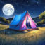

Vienna Oblique Image Finder
Developed by

dreamtent.dev
Loading index…
Image set
Wien 2023
Wien 2020
Latitude, Longitude
Radius (m)
Search
Auto-search on move
—
Keep images in memory
3 images
5 images
10 images
20 images
50 images
70 images
100 images
200 images
300 images
Preload list
Auto-preload
0
images found
Sort: Distance
Sort: Heading
Sort: Direction
Sort: H-angle |↑| centred
Sort: Orbit 360°
Hide ⚠ outside
m
↕
–
°
—
—
−
1×
+
Z:
m
● Marker
⊕ Zoom to
⊙ Pin centre
⧉ Overlay
×2
×3
×5
×10
×20
×30
base
px
+
px/layer
Reproject to main
near 0
near 4
near 8
near 16
near 32
near 64
near 128
near 265
🔓 Lock image
Wait full tiles
Switch while moving
↻ Rotate to marker
⬇ Download
▶
s
⌨ ↑↓←→ +# · , .
← Select an image from the list